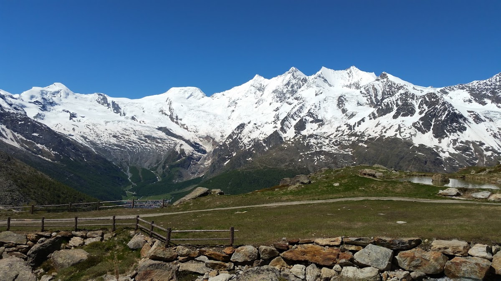
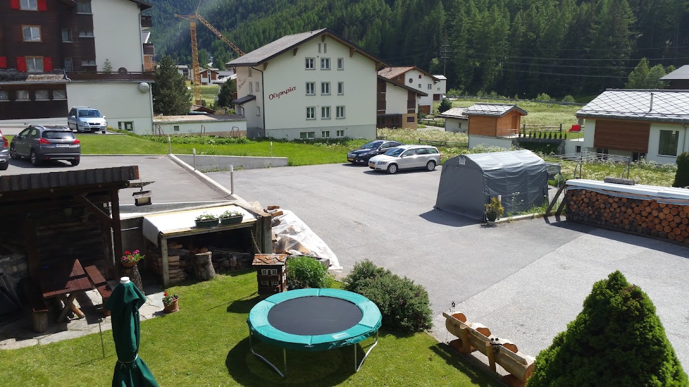
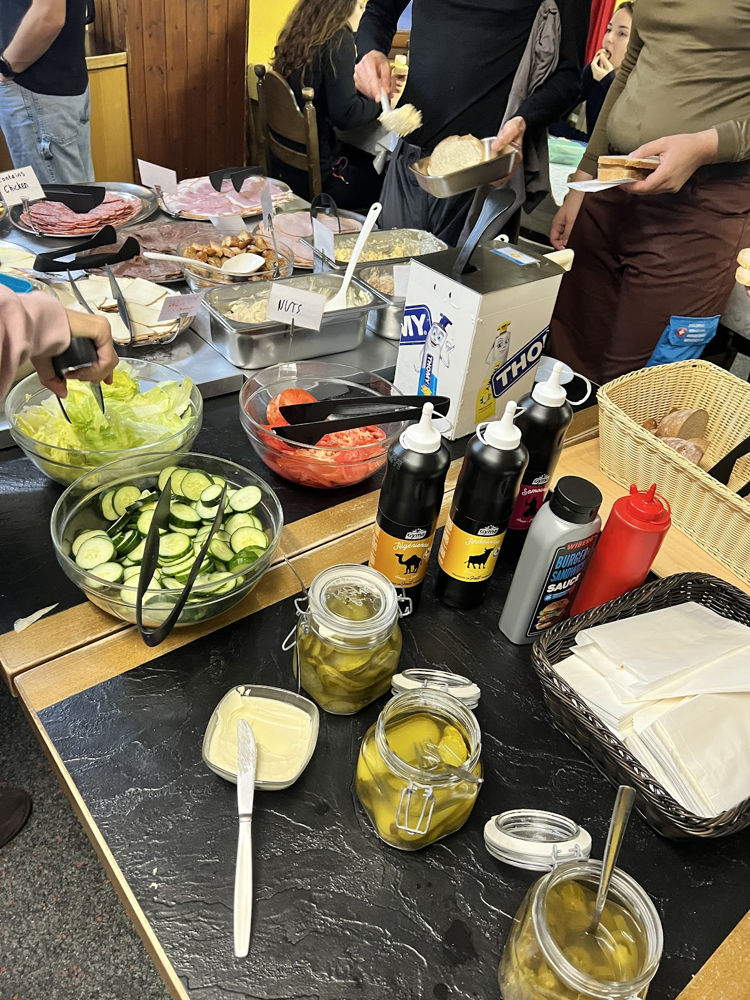

Die Zimmer
Zimmer im Überblick

01
Zentrale Lage
02
Für Gruppen geeignet
03
Persönlicher Kontakt
Das Haus
Über Alpenhotel Rodania
Das Alpenhotel Rodania liegt an der Saastalstrasse in Saas-Grund. Gäste berichten von einfachen Zimmern und einem funktionalen Aufenthalt, der besonders bei Gruppen und Schulklassen genutzt wird. Bewertungen loben gelegentlich das Personal, während andere Gäste die Zimmergröße und die Qualität des Essens kritisieren. Das Haus verfügt über keinen eigenen Internetauftritt.
2.9
24

01
Zimmer im Überblick
Gäste beschreiben die Zimmer als klein und einfach eingerichtet. Mehrere Betten mit unterschiedlichen Rahmen und Größen sind möglich. Die Badezimmer werden als sehr kompakt wahrgenommen. Einzelne Bewertungen erwähnen Sauberkeitsmängel.
02
Ihre Lage in Saas-Grund
Das Alpenhotel Rodania liegt an der Saastalstrasse 76 in Saas-Grund. Die Umgebung ist geprägt von den Bergen des Saastals und der Nähe zu Saas-Fee. Die Region ist bekannt für Wintersport und Wanderungen.

Die Lage
Ihre Lage in Saas-Grund
Das Alpenhotel Rodania liegt an der Saastalstrasse 76 in Saas-Grund. Die Umgebung ist geprägt von den Bergen des Saastals und der Nähe zu Saas-Fee. Die Region ist bekannt für Wintersport und Wanderungen.
Kontaktieren Sie uns direkt
Für Anfragen oder Buchungen rufen Sie bitte an. So erhalten Sie persönliche Auskünfte zu Verfügbarkeit und Konditionen.
027 957 24 23